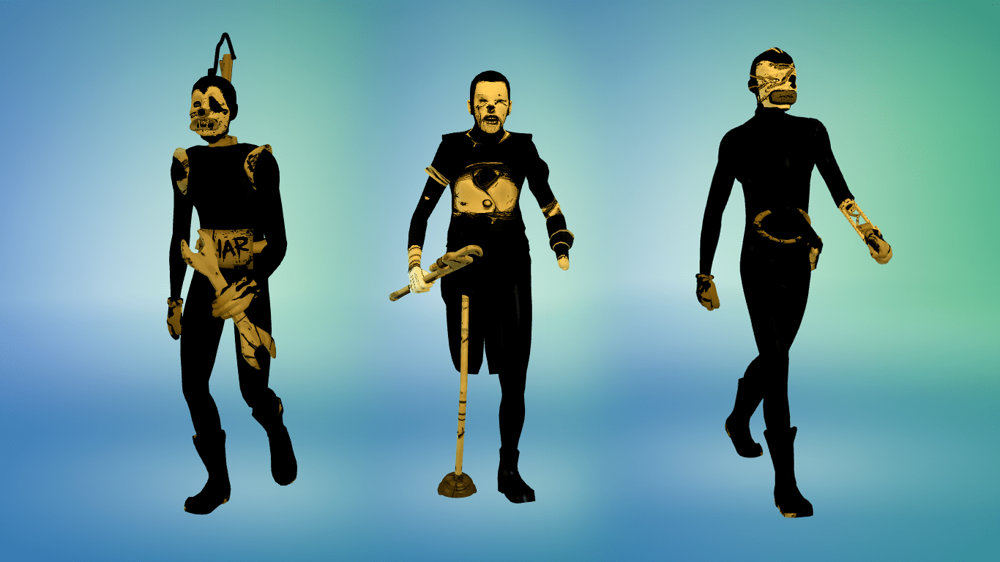
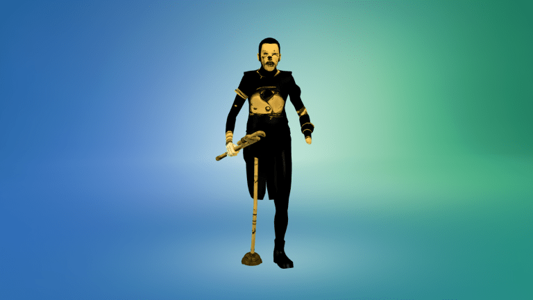
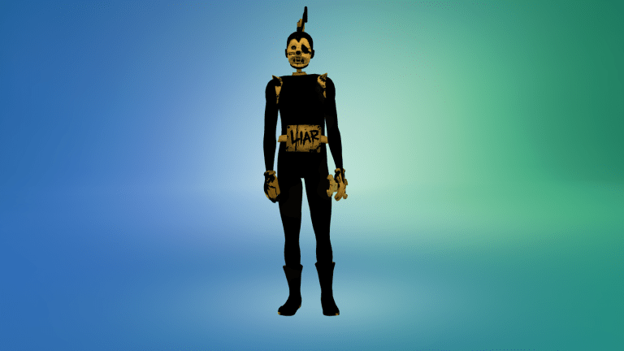
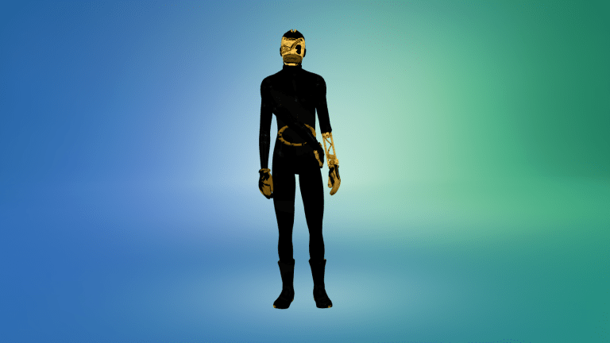

Bendy and the Ink Machine Butcher Gang CC for Sims 4
“Hit me! Hit me!”
This bundle contains items for the Butcher Gang. I have listed the items below along with any details about using them.
Piper
Piper is simple. You can find his outfit in the full body clothing section as one piece. Whilst I haven’t observed his content having any issues, if you notice some mesh problems, try using the first body preset as this is the one that the mesh was modeled on. Be sure to remove other items such as hair and accessories.
Fisher
Fisher is also quite simple as he only has one item which can be found in the full body category. The sign on Fisher’s stomach may have some issues as it does not increase with his waist size so you may need to give him a flatter stomach so that it does not clip into his stomach. Again, don’t forget to remove other items like hair and accessories.
Striker
Striker is a little more difficult. You can find his body in the full body category and his head is found in hats. The head he uses may distort unless used with the first preset head, and the body may work best with the first preset body.
To download this bundle, click the link below.